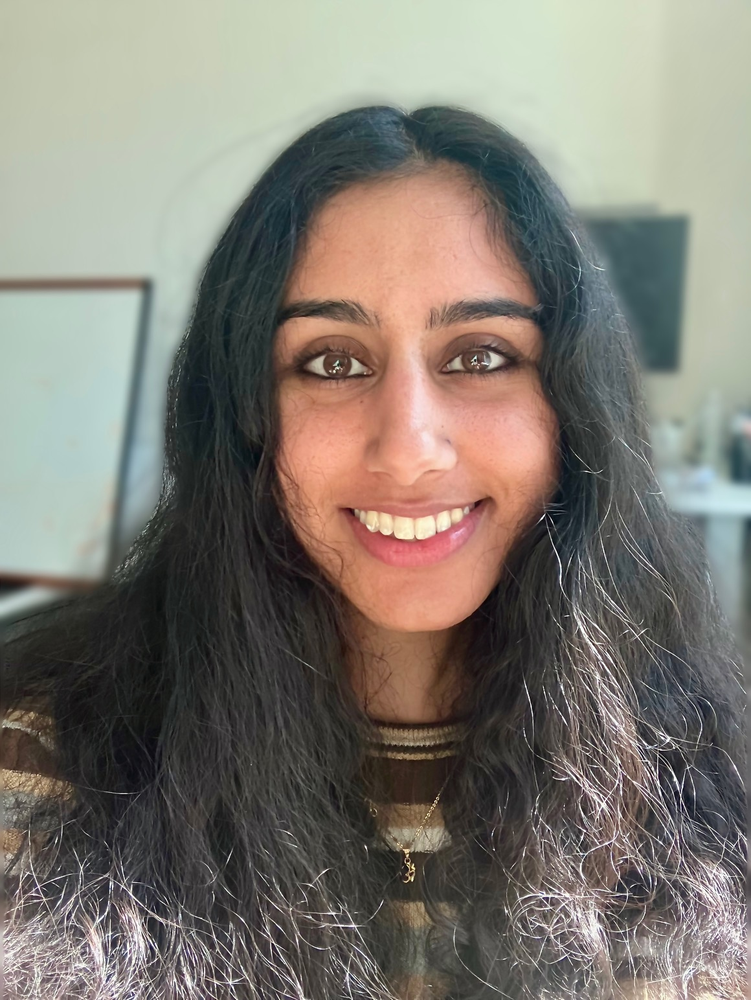

<div class="blurb">
	
	
	<p>Hi! I am a first year Computer Science Ph.D. candidate at Columbia University, advised by <a href="https://www.cs.columbia.edu/~chilton/chilton.html">Dr. Lydia Chilton</a> in the Computational Design Lab.
	<br/> <br/> I am a proud member of <a href="https://columbiahci.github.io/">🦁 Columbia HCI </a>, and I am grateful to be supported by the National Science Foundation Graduate Research Fellowship.
	<br/>
	<br/>
	<!-- Prior to starting my Ph.D., I worked at Microsoft as a Customer Success Account Manager in the Financial Services Industry from the Times Square office. I graduated in 2023 from the University of Chicago with a B.A. in Economics and B.S. in Computer Science, where I was fortunate to be advised by Dr. Marshini Chetty and Dr. Sarah Sebo.-->
	</p>
	
</div><!-- /.blurb -->
